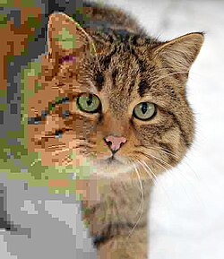

Cat JPEG

Pulled from Wikipedia.
This image is in Joint Photographic Experts Group (.JPG) format, and was chosen for 2 reasons.
- It is a good example of what highest and lowest quality JPEGs can look like.
- It was the first result when I searched "jpeg" on SearXNG image search.
Description
This image is a simple image of a cat on a gray background, with the right side showing a high quality version, while the left side shows a low quality version, demonstrating the difference in quality jpegs can have.